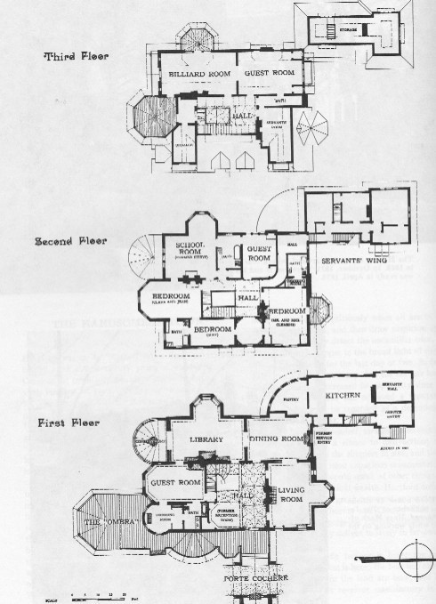

Hartford Layout

layout
courtesy of Mark Twain Himself
"The
house will be lovely inside, of course, & we shall live
inside, but we shall be forever looking out of the
windows." letter to Olivia L. Clemens, 7.3.1874,
Hartford, CT, as quoted in Mark Twain's Letters, Vol. 6
First
Floor | Second
Floor | Third
Floor
back
to house exterior